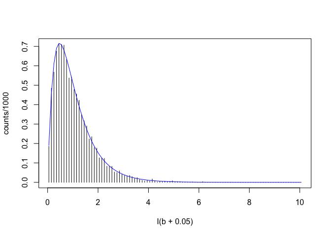

Capitolo 7 Una variabile indipendente categorica: ANOVA ad una via
7.1 La situazione sperimentale
Immaginiamo di aver posto a confronto cinque trattamenti sperimentali qualitativi (tipi di concime o varietà di frumento o diserbanti) e di aver registrato il loro effetto su una variabile quantitativa (ad esempio la produzione). Ci troviamo quindi ad avere un collettivo di osservazioni, all’interno delle quali esistono gruppi diversi di soggetti, classificabili in base al trattamento a cui sono stati sottoposti. Al solito, sappiamo che i soggetti osservati sono solo un campione di tutti quelli possibili, quindi dietro ai nostri soggetti vi è almeno una popolazione di riferimento. Più precisamente: se i trattamenti effettuati non avessero avuto effetto, avremmo una sola popolazione di riferimento e cinque campioni diversi provenienti dalla stessa popolazione. Se invece i trattamenti fossero stati efficaci, allora avremmo cinque popolazioni diverse, per la media, per la deviazione standard o per entrambe. Per semplicità, assumiamo che le cinque popolazioni differiscano solo per la media e non per la deviazione standard.
La prima ipotesi scientifica può essere tradotta in questo modo:
\[ Y_i = \mu + \varepsilon\]
con \(\varepsilon \sim N(0, \sigma)\). Insomma, abbiamo una sola popolazione distribuita normalmente, con media \(\mu\) e deviazione standard \(\sigma\). La seconda ipotesi, più interessante da un punto di vista sperimentale, è questa:
\[Y_i = \mu + \alpha_j + \varepsilon\]
Qui abbiamo un’intercetta \(\mu\) (vedremo tra breve cosa rappresenta), mentre \(\alpha_j\) è l’effetto del j-esimo trattamento. Per capire cosa rappresenta \(\mu\) dobbiamo pensare a due trattamenti, la cui media sia rispettivamente pari a 15 e 25. Se poniamo \(\mu = 20\) (la media generale), allora \(\alpha_1 = - 5\) e \(\alpha_2 = 5\). Ma è anche vero che alla stessa soluzione si potrebbe pervenire ponendo \(\mu = 19\) e quindi \(\alpha_1 = -4\) e \(\alpha_2 = 6\). ugualmente potremmo porre \(\mu = 18\) e quindi \(\alpha_1 = -3\) e \(\alpha_2 = 7\). E così via. Insomma, l’equazione lineare sovrastante ha infinite soluzioni.
Per uscire da questo impasse, dobbiamo porre dei vincoli. Ad esempio potremmo porre il vincolo che \(\alpha_1 = 0\). In questo caso risulta definito che \(\mu\) deve essere pari alla media del primo trattamento (\(\mu = 15\)) e \(\alpha_2 = 10\) (vincolo sul trattamento). Oppure potremmo porre il vincolo che \(\sum{\alpha} = 0\), quindi risulta definito che \(\mu\) deve essere pari alla media generale (\(\mu = 20\)) e \(\alpha_1 = -5\) (vincolo sulla somma). Un’altra possibilità è imporre che \(\mu\) sia uguale a 0 (vincolo sull’intercetta).
Questi vincoli prendono il nome di PARAMETRIZZAZIONI del modello lineare; la prima parametrizzazione (con vincolo sul trattamento) è quella di default, nella gran parte dei software statistici, incluso R.
7.2 La verità ‘vera’ (la popolazione)
Immaginiamo che, nella nostra popolazione, le medie dei cinque trattamenti siano:
- A = 9
- B = 5
- C = 16
- D = 27
- E = 31
Immaginiamo anche che l’errore sperimentale si gaussiano, con media 0 e deviazione standard pari a \(\sigma = 1.5\).
Penso sia opportuno ricordare l’elenco delle assunzioni che abbiamo posto:
- il modello deterministico è lineare, additivo
- non vi sono altri effetti, se non il trattamento e l’errore (puramente stocastico, con media 0 e valori indipendenti)
- gli errori sono normalmente distribuiti
- le varianze sono omogenee (unico valore di \(\sigma\), comune per tutti i gruppi)
7.3 Esecuzione dell’esperimento
Immaginiamo di fare un esperimento con 8 repliche e generiamo i dati con una simulazione di Monte Carlo.
treat <- rep(LETTERS[1:5], each = 8)
mu <- 9; alpha2 <- -4; alpha3 <- 7; alpha4 <- 18
alpha5 <- 22; sigma <- 1.5
alpha <- c(0, alpha2, alpha3, alpha4, alpha5)
Ye <- rep(mu + alpha, each = 8)
set.seed(1234)
Y <- Ye + rnorm(40, 0, sigma)
dataset <- data.frame(treat = treat, Y = Y)
rm(list=(ls()[ls()!="dataset"]))
head(dataset)
## treat Y
## 1 A 7.189401
## 2 A 9.416144
## 3 A 10.626662
## 4 A 5.481453
## 5 A 9.643687
## 6 A 9.7590847.4 Analisi dei dati
7.4.1 Statistiche descrittive
Descriviamo la tendenza centrale e la variabilità dei cinque gruppi.
library(plyr)
statDesc <- medie2 <- ddply(dataset, ~treat, summarise, media = mean(Y), devSt = sd(Y))
statDesc
## treat media devSt
## 1 A 8.554297 1.6602289
## 2 B 4.476377 0.9654610
## 3 C 15.966044 1.6322239
## 4 D 26.453399 1.2943200
## 5 E 29.445881 0.9882885Vediamo che i risultati riflettono abbastanza bene, ma non perfettamente, le caratteristiche della popolazione.
7.4.2 Stima dei parametri
In questo caso (disegno bilanciato, con lo stesso numero di repliche per trattamento), la stima dei parametri potrebbe essere fatta a mano, abbastanza facilmente. Più in generale, utilizziamo R.
mod <- lm(Y ~ factor(treat), data = dataset)La specifica del modello è chiara, considerando che l’incusione dell’intercetta è opzionale (‘~ 1 + treat’) è \(\epsilon\) viene incluso di default. Il termine ‘factor’ sta a significare che la variabile ‘treat’ è un fattore sperimentale. Questa specifica è opzionale in questo caso in cui la variabile è di tipo ‘carattere’, ma è fondamentale quando abbiamo a che fare con una codifica numerica.
Vediamo ora le stime dei parametri.
summary(mod)
##
## Call:
## lm(formula = Y ~ factor(treat), data = dataset)
##
## Residuals:
## Min 1Q Median 3Q Max
## -3.0728 -0.8229 -0.2602 0.8155 3.6577
##
## Coefficients:
## Estimate Std. Error t value Pr(>|t|)
## (Intercept) 8.5543 0.4745 18.029 < 2e-16 ***
## factor(treat)B -4.0779 0.6710 -6.077 6.11e-07 ***
## factor(treat)C 7.4117 0.6710 11.046 5.90e-13 ***
## factor(treat)D 17.8991 0.6710 26.676 < 2e-16 ***
## factor(treat)E 20.8916 0.6710 31.135 < 2e-16 ***
## ---
## Signif. codes: 0 '***' 0.001 '**' 0.01 '*' 0.05 '.' 0.1 ' ' 1
##
## Residual standard error: 1.342 on 35 degrees of freedom
## Multiple R-squared: 0.9836, Adjusted R-squared: 0.9818
## F-statistic: 525.8 on 4 and 35 DF, p-value: < 2.2e-16Notiamo immediatamente che viene utilizzata la parametrizzazione con vincolo sul trattamento, visto che l’intercetta coincide con la media del primo trattamento.
7.4.3 Stima della varianza
Il residuo \(\varepsilon\) rappresenta la componente casuale: se non vi fosse errore. la prima osservazione dovrebbe avere un valore pari al valore atteso del gruppo di cui fa parte (8.5543). In realtà essa è pari a 7.1894014, con un residuo, rispetto all’atteso’ pari a -1.3648986.
La serie completa dei residui può essere ottenuta come segue:
epsilon <- residuals(mod)La devianza del residuo (somma dei quadrati degli scarti) è:
RSS <- sum( epsilon^2 )
RSS
## [1] 63.03226Quanri gradi di libertà ha questa somma? Dobbiamo tener presente che i residui sono somme di quadrati di scarti rispetto alla media di ogni trattamento. Di conseguenza, la media dei residui è costretta ad essere zero per ogni trattamento, il che significa che, sempre per ogni trattamento, sette scarti sono liberi (7 gradi di libertà), mentre l’ottavo deve essere tale che sommato con gli altri restituisce zero. Quindi abbiamo 7 \(\times\) 5 = 35 gradi di libertà. Possiamo quindi calcolare la deviazione standard del residuo come:
sigma <- sqrt( RSS/35 )
sigma
## [1] 1.341984In realtà, questo valore l’avevamo già visto applicando la funzione ‘summary()’ all’oggetto ‘mod’. Da questo valore possiamo calcolare l’errore standard di una media (SEM) e l’errore standard di una differenza (SED):
SEM <- sigma / sqrt(8)
SED <- sqrt(2) * sigma / sqrt(8)
SEM; SED
## [1] 0.4744631
## [1] 0.6709921Anche questi valori erano già presenti nell’output della funzione ‘summary()’. Bastava ricordare che l’intercetta è una media, mentre gli altri valori \(\alpha\) sono differenze tra medie.
SEM e SED sono espresse nella stessa unità di misura dei dati (sono deviazioni standard) e possono essere utilizzati per costruire intervalli di confidenza intorno alle medie e alle loro differenze. Nell’ipotesi verificata di omogeneità delle varianze, il SEM può essere utilizzato per quantificare l’incertezza di una media, al posto dell’errore standard calcolato per le singole repliche.
7.4.4 Effetto del trattamento
Abbiamo calcolato la devianza del residuo, cioè abbiamo misurato la quota parte di variabilità di natura stocastica. Possiamo ora considerare i valori attesi, cioè le osservazioni deurate dall’errore:
dataset$Y - residuals(mod)
## 1 2 3 4 5 6 7
## 8.554297 8.554297 8.554297 8.554297 8.554297 8.554297 8.554297
## 8 9 10 11 12 13 14
## 8.554297 4.476377 4.476377 4.476377 4.476377 4.476377 4.476377
## 15 16 17 18 19 20 21
## 4.476377 4.476377 15.966044 15.966044 15.966044 15.966044 15.966044
## 22 23 24 25 26 27 28
## 15.966044 15.966044 15.966044 26.453399 26.453399 26.453399 26.453399
## 29 30 31 32 33 34 35
## 26.453399 26.453399 26.453399 26.453399 29.445881 29.445881 29.445881
## 36 37 38 39 40
## 29.445881 29.445881 29.445881 29.445881 29.445881che possiamo più semplicemente ottenere con la funzione ‘fitted(mod)’. In questo vettore sono rappresentate le medie dei trattamenti; la differenza tra i dati è solo imputabile al trattamento, visto che l’errore l’abbiamo deliberatamente rimosso. Possiamo calcolare la devianza dei dati:
Ye <- fitted(mod)
SSt <- sum( ( Ye - mean(Ye) )^2 )
SSt
## [1] 3788.037In questa caso abbiamo solo cinque valori liberi, dato che tutti i valori appartenenti allo stesso trattamento debbono essere uguali. La devianza del trattamento ha quindi 4 gradi di libertà.
In realtà, esiste anche un altro modo per determinare l’effetto del trattamento, che è utile per comprendere meglio ciò di cui stiamo parlando. Possiamo pensare di adattare ai dati il modello più semplice, quello che non include l’effetto del trattamento (modello della media)
modNull <- lm(Y ~ 1, data = dataset)
RSSnull <- sum(residuals(modNull) ^ 2)
RSSnull
## [1] 3851.069Vediamo che la devianza del residuo, in questo caso, è molto più alta di quella calcolata per il modello più complesso, che include l’effetto del trattamento. Questo è ovvio… come è ovvio che la differenza tra i due residui corrisponde proprio all’effetto del trattamento.
RSSnull - RSS
## [1] 3788.0377.4.5 Test d’ipotesi
Abbiamo descritto il nostro esperimento e ne abbiamo individuato le caratteristiche rilevanti, stimando i parametri che meglio le descrivono (effetti dei trattamenti e varianza). Le nostre stime non coincidono con la verità vera, ma la riflettono bene, perché i dati sono stati generati rispettando le assunzioni di base del modello (additività, indipendenza, normalità e omogeneità delle varianze).
Normalmente non conosciamo il modello generativo, quindi dobbiamo chiederci se i dati rispettano le assunzioni di base del modello. Di questo parleremo in una lezione a parte.
Ora, il nostro scopo è capire se il trattamento sperimentale ha prodotto un effetto rilevante, distinguibile da quel del caso (‘rumore di fondo’). In statistica, come nei tribunali, si assume che l’imputato (in questo caso l’effetto del trattamento) non ha commesso il fatto (non è stato efficace) fino a prova contraria. Di conseguenza, l’ipotesi nulla è che il trattamento non ha avuto effetto, cioè che:
\[H_0: \mu_1 = \mu_2 = \mu_3 = \mu_4 = \mu_5 = \mu\]
La stessa cosa può essere declinata come:
\[H_0: \alpha_1 = \alpha_2 = \alpha_3 = \alpha_4 = \alpha_5 = 0\]
Una statistica rilevante per testare questa ipotesi è data dal rapporto tra la varianza del trattamento e quella dell’errore:
\[F = \frac{MS_t}{MS_e} \]
Nel nostro caso:
MSt <- SSt / 4
MSe <- RSS / 35
Foss <- MSt / MSe
Foss
## [1] 525.847E’ evidente che se il trattamento non fosse stato efficace non dovrebbe aver prodotto una variabilità superiore a quella dell’errore (quindi F = 1). In questo caso la variabilità prodotta dal trattamento è stata quasi 526 volte superiore a quella dell’errore. Delle due l’una: o il trattamento è stato efficace oppure io sono stato particolarmente sfortunato e, nell’organizzare questo esperimento, si è verificato un caso particolarmente raro.
Ci chiediamo: “se l’ipotesi nulla è vera, qual è la ‘sampling distribution’ per F? Potremmo costruire questa distribuzione empiricamente, attraverso una simulazione MONTE CARLO. Con un modello lineare, R ci aiuta, in quanto ci evita di dover programmare la simulazione.
In primo luogo, abbiamo già visto che la situazione in cui il trattamento non ha effetto può anch’essa essere descritta da un modello lineare (vedi sopra: \(Y_i = \mu + \varepsilon\)), che abbiamo già parametrizzato in precedenza (‘modNull’).
Partendo da questo fittibg, R ci consente di simulare dataset con questo modello, cioè dataset nei quali non vi è l’effetto del trattamento. In questo modo possiamo vedere come variano i valori di F tra una simulazione e l’altra. A questo scopo utilizziamo la funzione ‘simulate()’.
Ysim <- simulate(modNull, 10000)
simF <- function(x) anova ( lm(x ~ factor(treat), data = dataset))$F[1]
Fvals <- apply(Ysim, 2, simF)
Fvals[1:10]
## sim_1 sim_2 sim_3 sim_4 sim_5 sim_6
## 2.25812418 0.50160669 0.50474627 0.01396108 2.31064454 0.70381152
## sim_7 sim_8 sim_9 sim_10
## 0.52767740 1.00204104 0.63479693 0.95838568I valori di F riportati non riflettono differenze tra i trattamenti e dovrebbero quindi essere bassi. Infatti vediamo che il minimo è 0.0061999 ed il massimo 9.1653244. Tra tutti i 10’000 valori, non ce ne è neanche uno pari o superiore a quello dato, il che vuol dire che la probabilità che l’ipotesi nulla sia vera con F = 525.8 è minore di 1 su 10’000.
La sampling distribution (opportunamente discretizzata) è riportata in figura. Si tratta di una distribuzione chiaramente non normale, con media pari a 1.0585813, mediana pari a 0.8578396.
b <- seq(0, 10, by=0.1)
counts <- table(cut(Fvals, breaks=b))
counts <- c(as.numeric(counts), 0)
plot(counts/1000 ~ I(b + 0.05), type="h")
curve(df(x, 4, 35), add=T, col="blue")
Più formalmente, si può dimostrare che la sampling distribution di F è data dalla distribuzione F di Fisher, con 4 gradi di libertà al numeratore e 35 al denominatore (in blue in figura).
Di conseguenza, possiamo utilizzare la F di Fisher per calcolare la probabilità di ottenere un valore di F altrettanto estremo o più estremo del nostro. Ad esempio, in R, possiamo utilizzare la funzione:
1 - pf(Foss, 4, 35)
## [1] 0praticamente pari a 0. Insomma, in assenza di un effetto del trattamento (quindi per il solo effetto del caso), se ripetiamo l’esperimento infinite volte, abbiamo abbiamo una probabilità praticamente nulla che si produca un valore di F altrettanto alto o più alto di quello da noi osservato.
Di conseguenza, se rifiutiamo l’ipotesi nulla di assenza di effetto del trattamento e accettiamo l’ipotesi alternativa (il trattamento ha avuto effetto significativo) ci portiamo dietro un rischio di errore estremamente piccolo, comunque molto al disotto della soglia prefissata del 5%.
INSOMMA:
- Con l’ANOVA la variabilità totale dei dati viene decomposta in due quote, una attribuibile al trattamento sperimentale ed una inspiegabile (residuo)
- L’effetto del trattamento è significativo, se la variabilità che esso provoca è superiore a quella inspiegabile
- Confronto tra varianze (test F). L’ipotesi nulla è che il trattamento NON E’ significativo
- P rappresenta la probabilità di errore nel rifiutare l’ipotesi nulla
- L’ipotesi nulla è rifiutata quando P \(\leq\) 0.05 (livello di protezione arbitrario, ma universalmente accettato)
La tabella finale dell’ANOVA può essere ottenuta in R utilizzando la seguente funzione.
anova(mod)
## Analysis of Variance Table
##
## Response: Y
## Df Sum Sq Mean Sq F value Pr(>F)
## factor(treat) 4 3788 947.01 525.85 < 2.2e-16 ***
## Residuals 35 63 1.80
## ---
## Signif. codes: 0 '***' 0.001 '**' 0.01 '*' 0.05 '.' 0.1 ' ' 1Ovviamente, è necessario ricordare che tutte le considerazioni fatte finora sono valide se il dataset è conforme alle assunzioni di base per l’anova, cioè normalità dei residui e omogeneità delle varianze. In questo caso sappiamo che è vero, in generale bisogna eseguire i necessari controlli, di cui parleremo in un prossimo capitolo.
7.5 Per approfondimenti
Kuehl, R. O., 2000. Design of experiments: statistical principles of research design and analysis. Duxbury Press (CHAPTER 2)